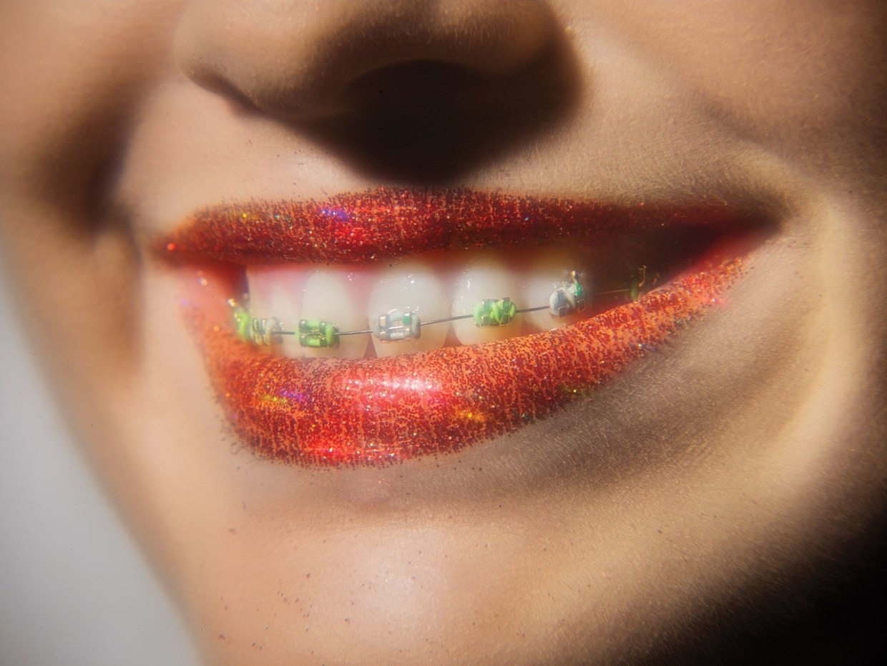

Portfolio
How Millennials Like Their Makeup
At Beautycon - where Sephora meets Coachella - cosmetics are sold with the self empowering language of Instagram

Cover Story
Gayle Kabaker's Falling Beauty
The artist behind the cover of this week's Style Issue talks about her love of fashion
Podcast Dept
A Podcast About Great Beginnings
It starts with an oral history of the HBO Show, "Curb Your Enthusiasm."